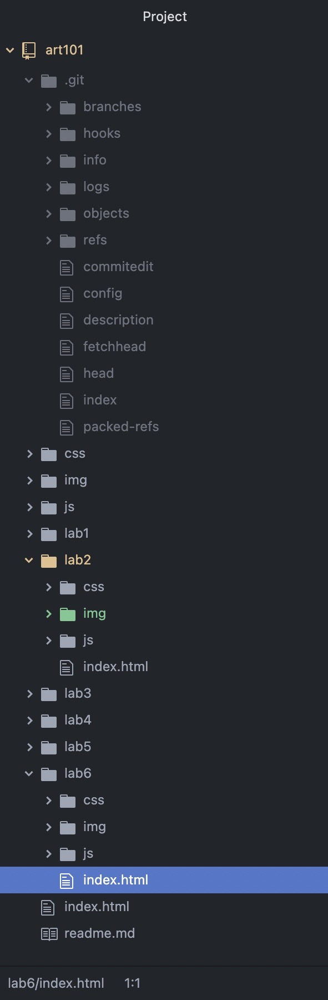
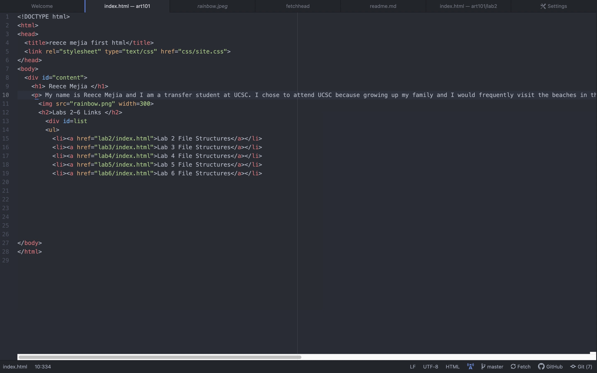
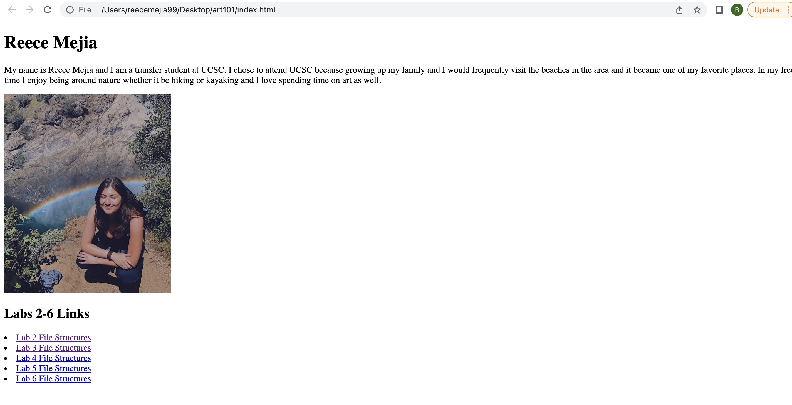
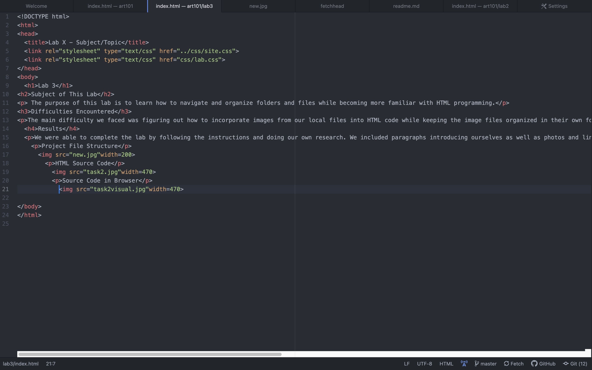
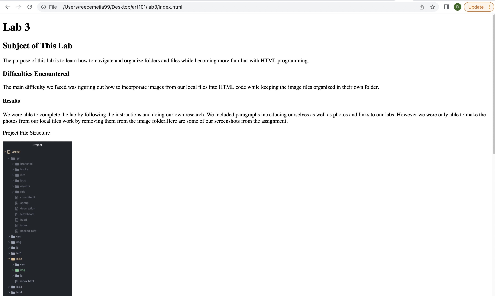

The purpose of this lab is to learn how to navigate and organize folders and files while becoming more familiar with HTML programming.
The main difficulty we faced was figuring out how to incorporate images from our local files into HTML code while keeping the image files organized in their own folder.
We were able to complete the lab by following the instructions and doing our own research. We included paragraphs introducing ourselves as well as photos and links to our labs. However we were only able to make the photos from our local files work by removing them from the image folder.Here are some of our screenshots from the assignment.
Project File Structure
HTML Source Code
Source Code in Browser
HTML Source Code for Lab3
Lab 3 In Browser
